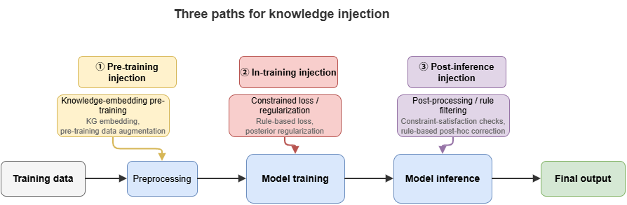
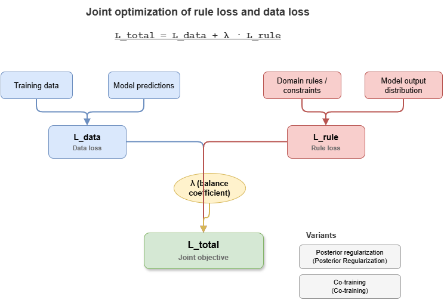
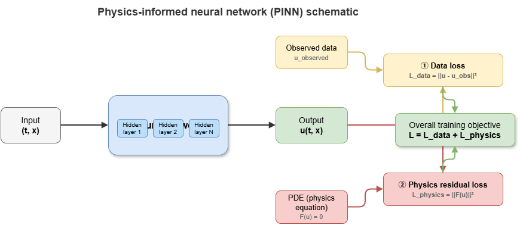

Earlier parts fixed the neuro-symbolic taxonomy and examined prior symbolic representations such as the knowledge graph (SkyKG). This chapter enters the core technical territory of neuro-symbolic fusion—how discrete, structured knowledge and rules are injected into continuous, gradient-trained deep neural networks.
We systematically present basic paradigms of constrained learning: turning logical propositions into continuous losses, posterior regularization, and hard physical constraints. Together they underpin safety-critical settings such as low-altitude traffic, where outputs must follow not only empirical distributions but physical law and operational regulation.
8.1 Logic rules as loss functions#
The most direct injection route is to map discrete logic rules (propositional or first-order predicate logic) to differentiable continuous functions and add them as penalty (regularization) terms to the total loss.
The central difficulty is that classical Boolean logic lives on \(\{0, 1\}\), which blocks gradient descent. Fuzzy logic or real-valued logic is required—for example T-norms as used in Logic Tensor Networks (LTN).
Under the Lukasiewicz T-norm, basic connectives relax to continuous operators on \([0,1]\) (let \(a, b \in [0,1]\) denote probability or confidence that propositions hold):
Negation (\(\neg a\)): \(1 - a\)
Conjunction (\(a \land b\)): \(\max(0, a + b - 1)\)
Disjunction (\(a \lor b\)): \(\min(1, a + b)\)
Implication (\(a \Rightarrow b\)): \(\min(1, 1 - a + b)\)
In low-altitude traffic, suppose a safety rule \(\phi\): “If a UAV is in a congested grid (\(P\)) and hovering (\(Q\)), the system must raise a high-severity alert (\(R\)).” Formally, \(\forall x (P(x) \land Q(x) \Rightarrow R(x))\). The network outputs probabilities for \(P\), \(Q\), and \(R\). We measure violation of the rule and define a rule loss \(L_{rule}\):
Jointly optimizing \(L_{total} = L_{data} + \lambda L_{rule}\) fits observations while enforcing traffic-control logic.
8.2 Constrained optimization and posterior regularization#
Loss-based injection bakes rules into training. Posterior regularization (PR) instead constrains the model’s output distribution (the posterior) from a probabilistic inference viewpoint.
Let the neural network define a parametric conditional \(P_\theta(Y|X)\) that may violate known domain rules. Knowledge graphs or business rules induce a “feasible family” \(\mathcal{Q}\). PR seeks a target \(Q(Y|X)\) in \(\mathcal{Q}\) that stays close to \(P_\theta\).
A typical objective minimizes data log-loss plus KL divergence:
In practice, alternating optimization akin to EM is common:
E-step (projection): Fix \(\theta\); find \(Q\) satisfying rules and closest to the current network output.
M-step (update): Fix \(Q\); use it as soft labels and update \(\theta\) by backpropagation.
For UAM path planning, PR can keep multi-UAV trajectory distributions \(P_\theta\) inside a non-overlapping feasible set \(\mathcal{Q}\), strengthening zero-shot safety margins.
8.3 Co-training rules and neural models#
Loss formulation and PR require compiling rules into differentiable math. For complex, non-differentiable external engines (e.g., graph reasoners), co-training—often teacher–student—is appropriate.
Teacher (knowledge-led): Integrates logic engines and KG reasoning; too slow for online inference but offline supplies logically tight pseudo-labels or soft rule constraints.
Student (perception-led): A lightweight network (GNN or Transformer) on raw sensing.
During training, the Teacher audits and corrects the Student. The Student fits labels and the Teacher’s inferred distribution. At deployment (e.g., edge nodes for low altitude), only the fast Student runs—matching Part 7’s real-time demands while distilling symbolic knowledge into parameters.
8.4 Physical constraints and mechanism-informed networks#
For low-altitude traffic and autonomous driving, paramount “knowledge” is Newtonian mechanics, aerodynamics, and kinodynamics. Embedding such mechanisms yields physics-informed neural networks (PINNs).
In the neuro-symbolic view, physical laws are a special class of symbolic rules. Aircraft motion satisfies PDE-governed dynamics. Automatic differentiation on network outputs yields temporal and spatial derivatives to test physical plausibility.
Let the governing equation be \(\mathcal{F}(u(t, x)) = 0\) with neural state \(u\). The physics residual enters the loss:
For UAM trajectory prediction, adding residual terms for dynamics beside MSE removes “teleportation” or impossible turns common in naive Seq2Seq models, enforcing dynamically executable trajectories.
8.5 From knowledge injection to explainable reasoning#
Injection aims to constrain nets for OOD robustness and safety. One-way symbolic-to-neural injection also enables constraint-based explainability:
Concept alignment: Concept bottleneck models (CBMs) force intermediate concepts aligned to the domain KG (e.g., “distance below safety threshold,” “opposing velocity vectors”) before final risk predictions.
Attribution: When a specific rule loss \(L_{rule\_k}\) binds or fires, decisions can be attributed to that symbolic rule.
Networks become not only safer but more self-aware of why they are safe—foundational for the next chapter on KG-driven explainable risk reasoning in the static-cognition thread.
8.6 Supplement: semantic loss, probabilistic logic programming, and differentiable theorem proving#
The preceding sections centered on T-norm relaxation, PR, and physics residuals. The injection landscape is richer. This supplement sketches advanced methods that sharpen theory or expressiveness.
8.6.1 Semantic loss#
T-norm losses are intuitive but approximate: T-norm choice changes gradients, and faithfulness to complex formulas can suffer. Semantic loss (Xu et al., 2018) takes a different path.
Given propositional constraint \(\alpha\), compute the total probability—under independent Bernoullis \(p_1,\dots,p_n\)—that \(\alpha\) holds:
Semantic loss is \(L_{sem} = -\log P(\alpha)\), minimized at zero iff the joint distribution satisfies \(\alpha\). Weighted model counting (WMC) on compiled representations (OBDD, SDD) makes this tractable. Compared with T-norms, semantic loss is exact for propositional logic and independent of a particular norm. It excels with mutual-exclusion constraints in multi-label settings and consistency in semi-supervised learning.
8.6.2 Probabilistic logic programming#
Embedding neural nets in logic programs enables end-to-end perception plus symbolic reasoning. DeepProbLog uses neural predicates: nets map raw inputs (e.g., images) to discrete distributions (e.g., digit classes); ProbLog’s engine combines them with rules. Inference is arithmetic-circuit evaluation, so gradients flow to net parameters.
NeurASP couples nets with answer set programming (ASP), leveraging nonmonotonic reasoning for defaults, exceptions, and constraint satisfaction, widening logical expressiveness.
8.6.3 Differentiable theorem proving#
Classical provers (e.g., Prolog with unification and backtracking) are discrete. Differentiable theorem proving replaces exact symbol matching with vector similarity. Neural theorem provers (NTPs) embed constants and predicates densely, substitute cosine similarity for unification, and use differentiable backward chaining to score queries—yielding an end-to-end differentiable graph that learns embeddings while rules guide proof paths.
8.6.4 Attention and learnable rule weights#
Not all rules matter equally in every context. Attention in GNNs and Transformers can weight candidate rules or logic paths dynamically, focusing relevant subsets. This soft selection complements the fixed \(\lambda\) weighting in §8.1 and supports automated rule management and context adaptation.
Together: semantic loss improves theoretical fidelity; probabilistic logic programming unifies perception and inference; differentiable proving folds classical logic into gradient optimization; attention learns when rules apply—pushing neuro-symbolic fusion from “simple constraints” toward deep integration.
Chapter summary#
This chapter surveyed knowledge injection and constrained learning—how symbolic knowledge enters continuous optimization. Logic-as-loss maps rules via fuzzy/real-valued relaxations into training objectives. Posterior regularization constrains output distributions, not only parameters. Co-training shows teacher–student and external engines distilling symbolic knowledge. Physics-informed nets encode scientific and engineering bounds as priors. Finally, injection improves safety and generalization while enabling concept alignment, rule attribution, and structured explanation.
Key concepts#
Logic as differentiable loss: Mapping symbolic rules to trainable penalty terms.
Posterior regularization: Constraining output distributions, not only parameters.
Co-training: Mutual correction between rule-led and neural models during training.
Physics-informed neural networks: Embedding PDE or mechanism residuals in training.
Explainable constrained learning: Safety plus concept alignment and rule-level attribution.
Study questions#
Compared with post-hoc rule checking, what are the trade-offs of writing rules directly into the loss?
Why is posterior regularization well suited to “outputs must lie in a feasible set”?
In low-altitude settings, which knowledge fits physical constraints versus logical rules?
Case study#
“Minimum separation in low-altitude conflict prediction”: train a purely data-driven trajectory model, then inject minimum-separation rules as logic loss and turn-radius limits as physics residuals; compare OOD behavior and explainability.
Figure suggestions#
Figure 8-1: Three injection paths—before training, during training, after inference.

Figure 8-2: Relationships among rule loss, posterior regularization, and co-training.

Figure 8-3: Coupling data loss and mechanism loss in constraint networks.

Formula index#
Total loss: \(\mathcal{L}_{\mathrm{total}} = \mathcal{L}_{\mathrm{data}} + \lambda\,\mathcal{L}_{\mathrm{rule}}\)
Posterior regularization: \(\min_{\theta,\, Q \in \mathcal{Q}} \left[\mathcal{L}_{\mathrm{data}}(\theta) + \lambda\,D_{\mathrm{KL}}(Q || P_\theta)\right]\)
Physics residual: \(\mathcal{L}_{\mathrm{physics}} = \frac{1}{N_p}\sum_{i}\|F(u(t_i, x_i))\|^2\)
Theme: encoding rules and mechanisms in the optimization objective.
References#
Xu, J., Zhang, Z., Friedman, T., Liang, Y., & Van den Broeck, G. (2018). A Semantic Loss Function for Deep Learning with Symbolic Knowledge. Proceedings of the 35th International Conference on Machine Learning (ICML).
Raissi, M., Perdikaris, P., & Karniadakis, G. E. (2019). Physics-informed neural networks: A deep learning framework for solving forward and inverse problems involving nonlinear partial differential equations. Journal of Computational Physics, 378, 686–707.
Hu, Z., Ma, X., Liu, Z., Hovy, E., & Xing, E. (2016). Harnessing Deep Neural Networks with Logic Rules. Proceedings of the 54th Annual Meeting of the Association for Computational Linguistics (ACL).
Hinton, G., Vinyals, O., & Dean, J. (2015). Distilling the Knowledge in a Neural Network. arXiv preprint arXiv:1503.02531.
Serafini, L., & Garcez, A. d. (2016). Logic Tensor Networks: Deep Learning and Logical Reasoning from Data and Knowledge. arXiv preprint arXiv:1606.04422.
Ganchev, K., Graça, J., Gillenwater, J., & Taskar, B. (2010). Posterior Regularization for Structured Latent Variable Models. Journal of Machine Learning Research, 11, 2001–2049.
Manhaeve, R., Dumancic, S., Kimmig, A., Demeester, T., & De Raedt, L. (2018). DeepProbLog: Neural Probabilistic Logic Programming. Advances in Neural Information Processing Systems (NeurIPS).